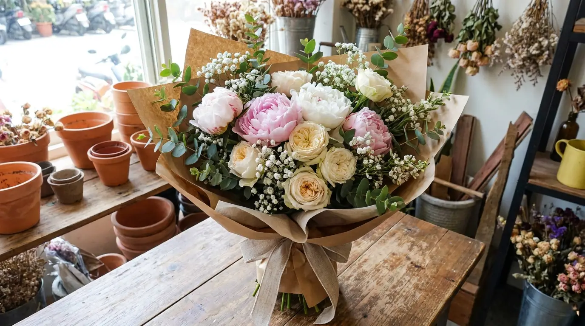

婚禮花藝
新娘捧花、桌花佈置、證婚拱門與整場婚禮花藝設計。從提案、試版到當日佈置，讓花成為婚禮最動人的細節。
NT$2,400 起查看作品 →

手工花束
生日、紀念日、求婚或日常送禮的手工花束。依對象、場合與您想傳達的心意，當季手綁、獨一無二。
NT$1,200 起查看作品 →

企業花禮
開幕花籃、會議桌花、企業贈禮與長期合約配花。專業形象、準時配送，是您最可靠的花藝夥伴。
洽詢報價查看作品 →

節慶花藝
母親節、情人節、聖誕與農曆新年的應景花藝。每逢佳節，用一束花為重要的人留下季節的記憶。
依檔期查看作品 →
實際款式與報價依當季花材與您的需求客製，歡迎透過「聯絡訂購」與我們討論。